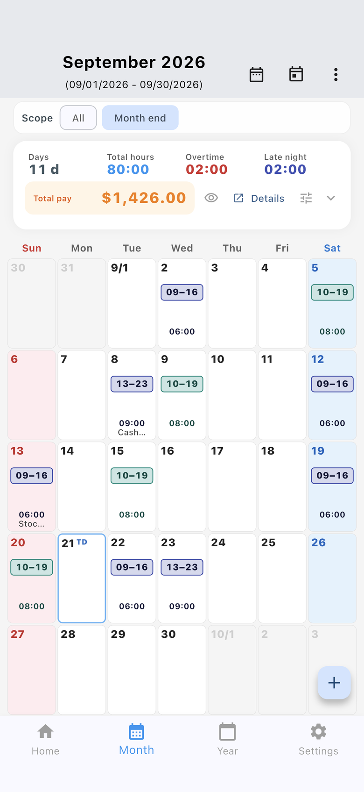

How to switch
- Open Settings.
- Open App basic settings.
- Under Totals grouped by, choose cutoff day or workplace.
Month and Year also show the same switch at the top. It is hidden when you have only one workplace.
New installs start on workplace. If you already used the app, the previous cutoff grouping stays selected.
Cutoff day
Every workplace that shares a cutoff is combined into one total. Workplaces with a different cutoff stay in a separate group.
The cutoff is set on the workplace. Check it in Settings → Workplaces.
Workplace
Only the workplace you pick is totaled. The period uses that workplace’s cutoff. Use this when you work more than one job and want hours and estimated pay for each.
List and calendar are separate from the grouping
The Month tab can show a list or a calendar. That choice does not change whether totals are grouped by cutoff day or by workplace.
- Settings → App basic settings → Month display, or the overflow menu on the Month screen, switches list and calendar.
- The calendar shows each day’s start-to-end time range. Hours worked are a separate calendar display option.
- Japanese public holiday names appear when the app language is Japanese. Pay figures are estimates.
